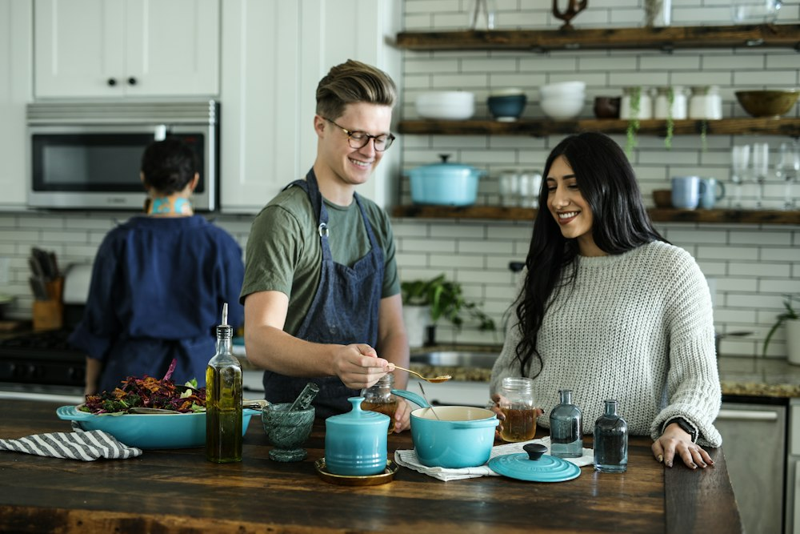

Our Story
A Kitchen Built Around the Wood Fire
Olivetta began as a small counter-service spot on Cedar Lane in 2014. A single wood-fired oven, six tables, and a chalkboard menu that changed every morning.
A decade later, the oven is still the heart of the kitchen — but the room has grown into something more intentional. We work with a tight list of farmers, fishmongers, and winemakers we know by name. The menu shifts with the seasons; the welcome stays the same.
Elena Marchetti Chef & Owner